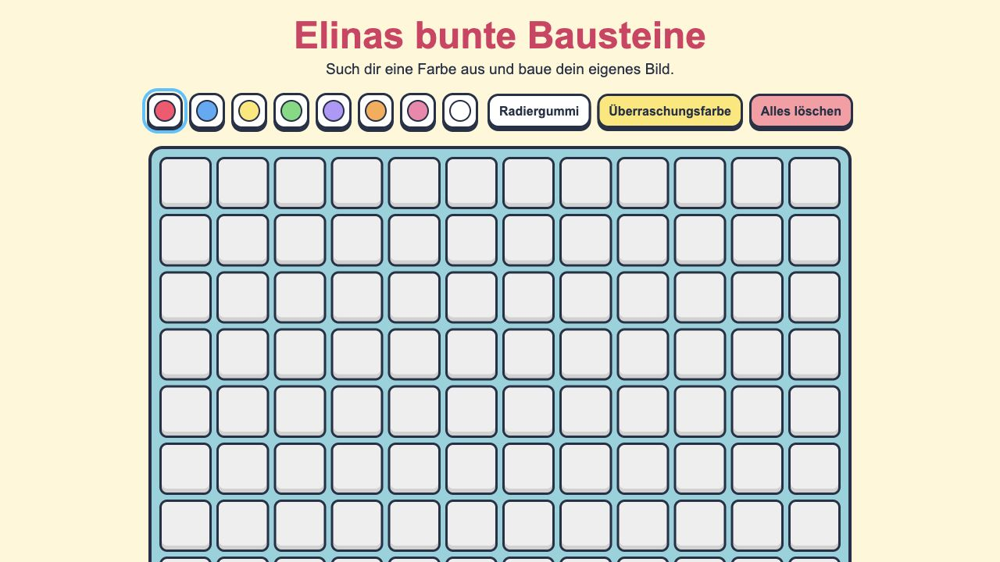
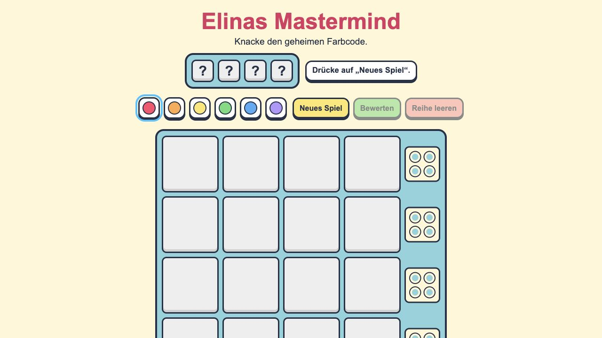

Bauen
Elinas bunte Bausteine
Ein Raster voller Bausteine, Farben und Ideen. Feld für Feld entsteht ein eigenes kleines Bild.
ÖffnenElinas erste Webseite
Kleine Spiele, bunte Ideen und viel Ausprobieren. Hier wohnt Elinas Sammlung aus drei Webprojekten: bauen, knobeln und malen. Alles ist direkt im Browser spielbar.



Eine Startseite für Elina, 6 Jahre alt, und für alle, die ihre kleinen Browserprojekte ausprobieren möchten.
Drei Projekte
Bauen
Ein Raster voller Bausteine, Farben und Ideen. Feld für Feld entsteht ein eigenes kleines Bild.
ÖffnenKnobeln
Finde den geheimen Farbcode. Runde für Runde helfen kleine Hinweise beim Knacken des Musters.
Öffnen
Malen
Das frühere Schildkröten-Malspiel: eine kleine Schildkröte läuft über das Blatt und hinterlässt bunte Punkte.
Öffnen